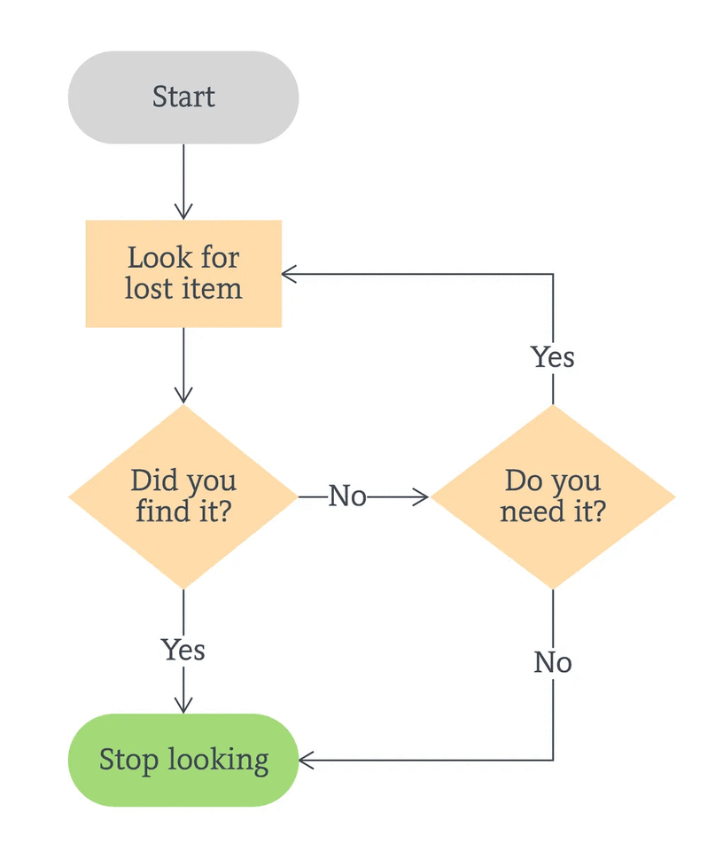

1. START
2. INPUT five numbers and store them in variables num1, num2, num3, num4, and num5
3. CALCULATE the sum of the five inputted numbers and store them in variable sum
4. CALCULATE the average of the five inputted numbers and store them in variable avg
HTML ELEMENTS
My First Heading
My First Paragraph
It has a start tag < html > and an end tag < /html >. Then, inside the < html > element, there is a < body > element:
The < body > element defines the document's body.
It has a start tag < body > and an end tag< body >.
Inside the < body > element there are two body elements:
< h1 >My First Heading< /h1 >
< p >My First Paragraph.
However, never rely on this! Unexpected result or errors may occur if you forget the end tag!
HTML elements with no content are called empty elements.
< p >This is a < br > paragraph with a line break.< /br >
A flowchart is a diagrammatic representation of an algorithm.
Flow line - indicates the flow of logic by connecting
PURPOSE. DISCRITION
Flow line -indicates the flow of logic by connection Symbols
Terminal (stop/Start) - Represent the start and the end of a flowchart
Input/output - Used for input and output operation
Processing - Used for arithmetic operations and data manipulation
Decision - Used for decision making between two or more alternative
On-page Connector - Used to join different flowline
Off-page connector - Used to connect flowchart portion on a different pages
Predefined Process/function - Represents a group of statements performing one processing task.
1.Add two numbers entered by the user
Start
Declare variables n1,n2 and sum
Read n1 and n2
Sum <- n1 + n2
Display sum
Stop
2.find the largest among three different numbers entered by the user.
